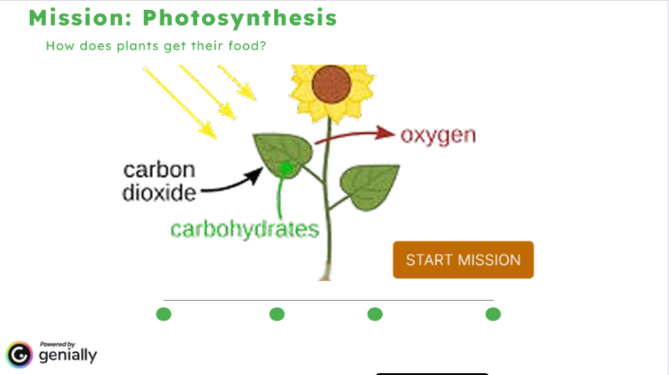

Selected Projects

Interactive LMS: Learn Quest
Primary Education • Web Design
The Problem:
Nigerian primary schools often lack centralized, engaging digital infrastructure, leading to fragmented learning.The Solution:
A custom LMS built with Lovable and GitHub that streamlines assignments and progress tracking.The Result:
A structured "digital home" for students that turns passive lessons into active quests.
Mission: Photosynthesis→
Gamified Learning • Science Curriculum
The Problem:
Abstract science concepts (like Gravity) are difficult to grasp through static textbooks, causing engagement decay.The Solution:
Gamified modules designed using Mayer’s Principles and UDL to reduce cognitive load.The Result:
Basic 5 students "learn by doing" through interactive simulations, making complex ideas visual and accessible.Pedagogical
Foundation
My work is grounded in cognitive science and inclusive design. I architect learning paths that respect how the human brain processes information.
1
Mayer’s Multimedia Principles
Reducing cognitive load by balancing visual and auditory channels effectively.
2
Universal Design for Learning (UDL)
Providing multiple means of representation and engagement for all learner types.
Software Expertise
Authoring
Storyline, Genially, Figma, Canva
Development
GitHub, Lovable
LMS & Admin
Canvas, Google Suite, Slack